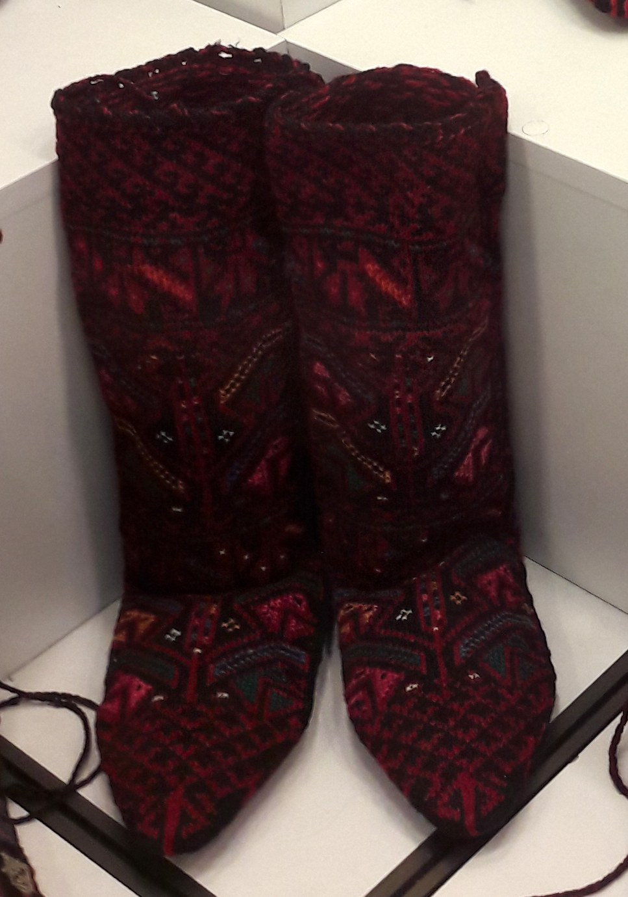
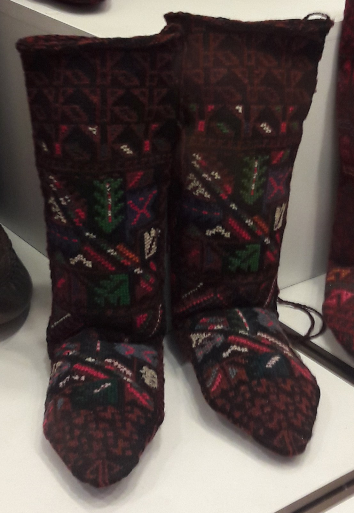

Merino Wool Micron Grades & Sock Performance
Comparative tribological analysis of 18.5 vs 21.5 micron fibers, examining tensile resilience, skin comfort, and trail longevity.

Terry Loop Cushion Density & Hiking Comfort
How high-density terry loops act as micro shock absorbers, dispersing peak heel-strike loads across steep granite descents.

Seamless Hand-Linked Toe Construction
Why loop-by-loop hand linking is the ultimate safeguard against ridge pressure blisters in mountaineering footwear.

Natural Wool Moisture Wicking & Vapor Tribology
The thermodynamics of wool keratin fibers: absorbing up to 35% humidity without feeling damp while generating heats of sorption.

Trail Sock & Alpine Boot Friction Dynamics
Analyzing the kinematic boundary layer between sock rib columns and stiff boot linings to prevent dermal shear strain.

Lanolin Retention & Washing Artisan Sock Care
Preserving wool's natural antimicrobial wax, temperature thresholds, pH buffering, and methods to double sock lifespan.